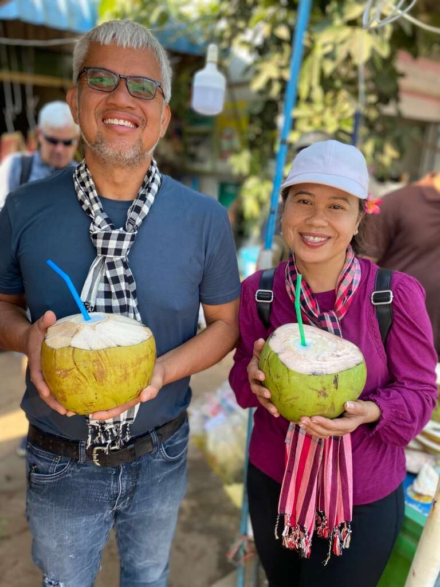
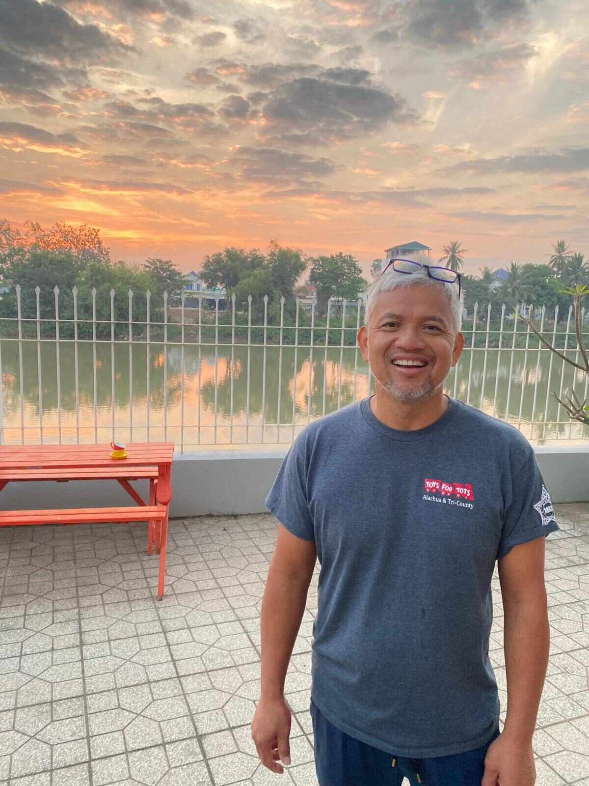
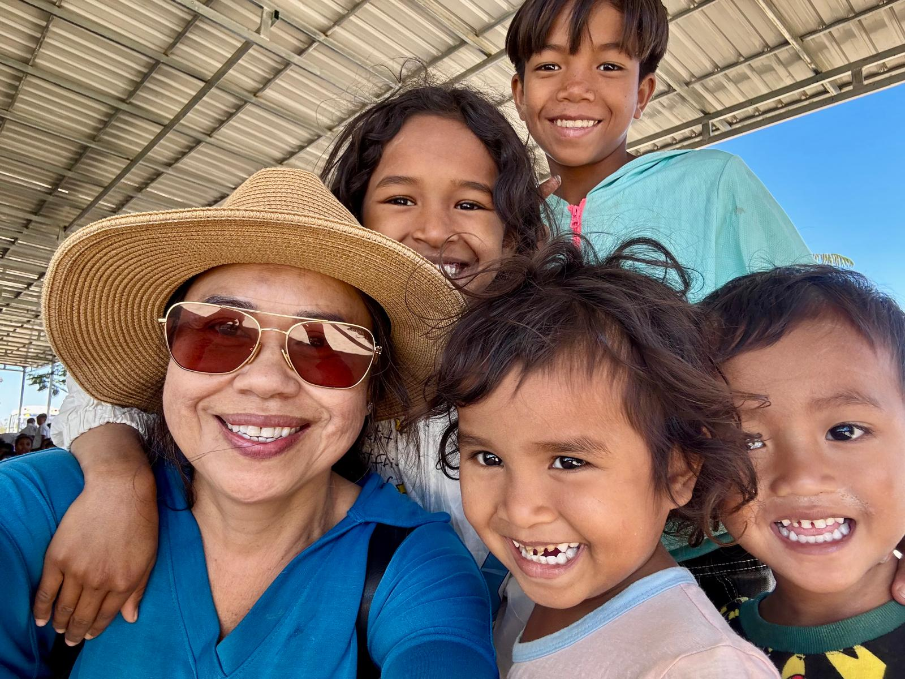

រឿងរបស់យើងOur Story
Two moments of light found in darkness
Light of Cambodia began with a simple desire: to faithfully share the love of Jesus Christ with people in Cambodia through genuine relationships, compassionate care, and long-term partnership. That desire traces back to two people.

“The light shines in the darkness, and the darkness has not overcome it.”
John 1:5
Light of Cambodia was founded in 2023, but the light it carries started long before that.
For Nareth, it was the light of his father's lighter guiding him through darkness. For Sydney, it was a butterfly reminding her that beauty and hope still existed, even in the midst of suffering.

ពន្លឺ
Where the light began: Nareth's story
As a young boy during the Khmer Rouge, Nareth and his family were fleeing for safety under the cover of night. In the chaos of escaping, he became separated from his father.
Alone in the darkness, surrounded by uncertainty and fear, he searched desperately, unable to see where to go. Then, in the distance, he saw a small light. His father was holding up a simple lighter.
It wasn't a bright spotlight that illuminated the entire field. It was just enough. Just enough for a frightened son to find his father again, just enough to guide him toward safety.
That moment became a lasting picture of hope. Years later, as God called Nareth back to serve the people of Cambodia, that memory took on new meaning. Just as one small light helped him find his way, Light of Cambodia believes God continues to use ordinary acts of faithfulness to guide people toward hope, healing, and ultimately, toward Christ.

សង្ឃឹម
Where the light began: Sydney's story
When Sydney was about nine years old, she was living in a refugee camp in Thailand after her family fled Cambodia during the Khmer Rouge era.
Surrounded by uncertainty, loss, and suffering, she watched family members and friends die and struggled to understand if life could ever be different. One day, overwhelmed by grief, she lay quietly outside, asking herself if there was any reason to keep going. As she looked around, a small group of bright red butterflies caught her attention.
In that moment, she realized something she has never forgotten: even in the darkest places, God still reveals beauty, hope, and new life. That simple reminder became part of her story, a reminder that hope can be found even when circumstances seem impossible.
The light continues
Today, those stories continue through children who are learning, families who are finding hope, churches that are growing, and communities being strengthened through the love of Christ.